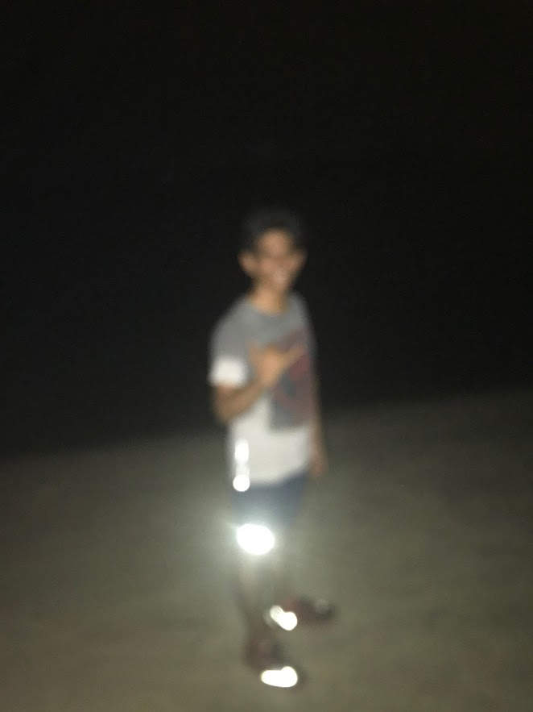
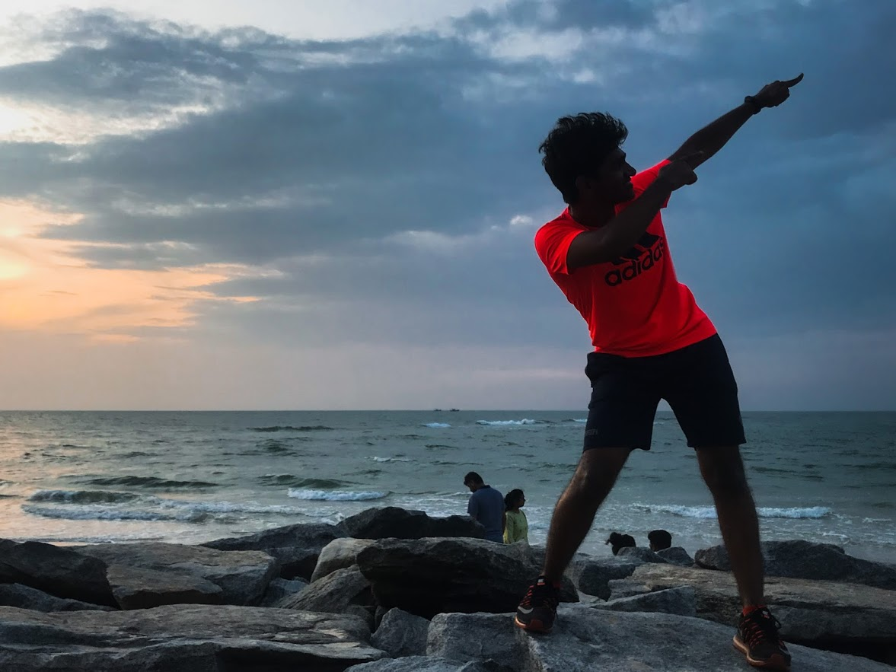
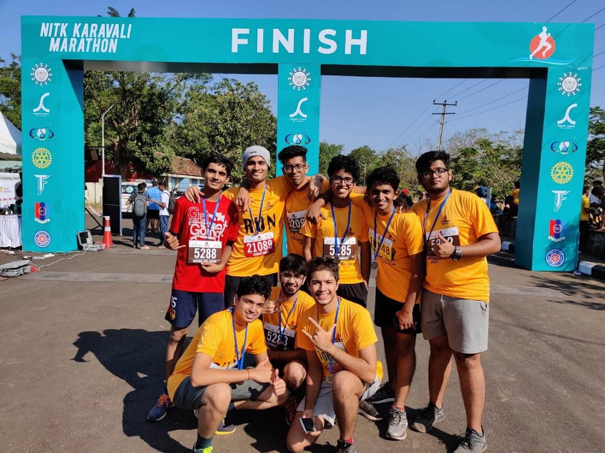

Well I'm actually new to running, it's been about 6-7 months and it's been amazing is all I have to say. I started running after my friend once invited me to run with him to a beach about 7-8 km away. I thought I could and it would'nt be hard, but needless to say it wasn't. One kilometer in my body started to die of dehydration and I felt a slight pain in my lower abdomen. I wanted to stop but friend kept motivating me. He kept pushing me and together we made it. Slowed down more than a few times and but in the end after reaching there I felt astounded and the view was amazing. Easily among the best things I've done.
-

- 
- 
- 
It is thought that human running evolved at least four and a half million years ago out of the ability of the ape-like Australopithecus, an early ancestor of humans, to walk upright on two legs.
Early humans most likely developed into endurance runners from the practice of persistence hunting of animals, the activity of following and chasing until a prey is too exhausted to flee, succumbing to "chase myopathy" (Sears 2001), and that human features such as the nuchal ligament, abundant sweat glands, the Achilles tendons, big knee joints and muscular glutei maximi, were changes caused by this type of activity (Bramble & Lieberman 2004, et al.). The theory as first proposed used comparative physiological evidence and the natural habits of animals when running, indicating the likelihood of this activity as a successful hunting method. Further evidence from observation of modern-day hunting practice also indicated this likelihood (Carrier et al. 1984). According to Sears scientific investigation (Walker & Leakey 1993) of the Nariokotome Skeleton provided further evidence for the Carrier theory.
Competitive running grew out of religious festivals in various areas such as Greece, Egypt, Asia, and the East African Rift in Africa. The Tailteann Games, an Irish sporting festival in honor of the goddess Tailtiu, dates back to 1829 BCE, and is one of the earliest records of competitive running.[citation needed] The origins of the Olympics and Marathon running are shrouded by myth and legend, though the first recorded games took place in 776 BCE. Running in Ancient Greece can be traced back to these games of 776 BCE.
Content